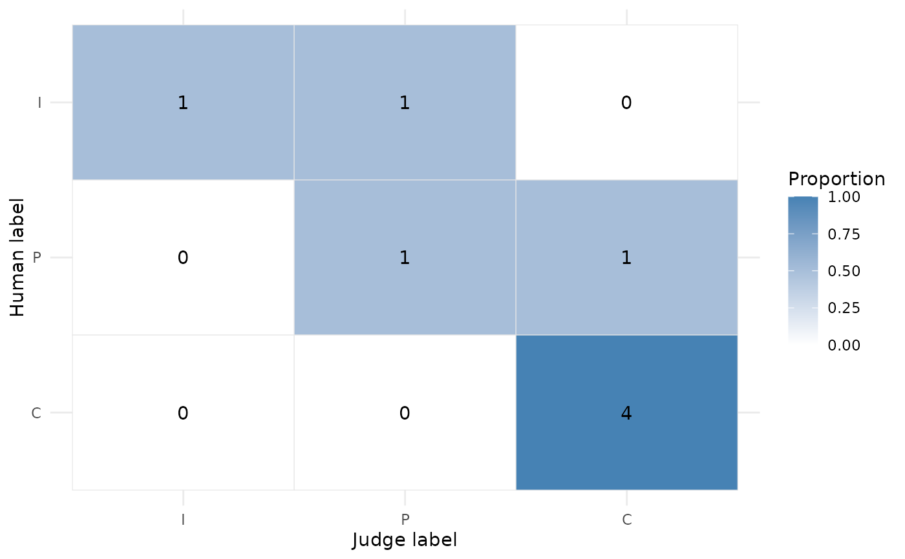

A quick ggplot2 heatmap of where the judge and humans diverge. Requires the
Suggested ggplot2 package. Axes follow the resolved label_levels order:
judge labels left to right and human labels top to bottom, so the agreement
diagonal runs from the top-left corner to the bottom-right.
Arguments
- x
An
yourhonor_calibrationobject or a ratings data frame.- normalize
Passed to
confusion(); defaults to"row"so each row shows how a human label was graded by the judge.- ...
Further arguments passed to
confusion(), such aslabel_levels,human_col, andjudge_col.
Examples
if (requireNamespace("ggplot2", quietly = TRUE)) {
ratings <- data.frame(
human = c("C", "C", "P", "I", "C", "P", "I", "C"),
judge = c("C", "C", "C", "I", "C", "P", "P", "C")
)
plot_confusion(ratings, label_levels = c("I", "P", "C"))
}
